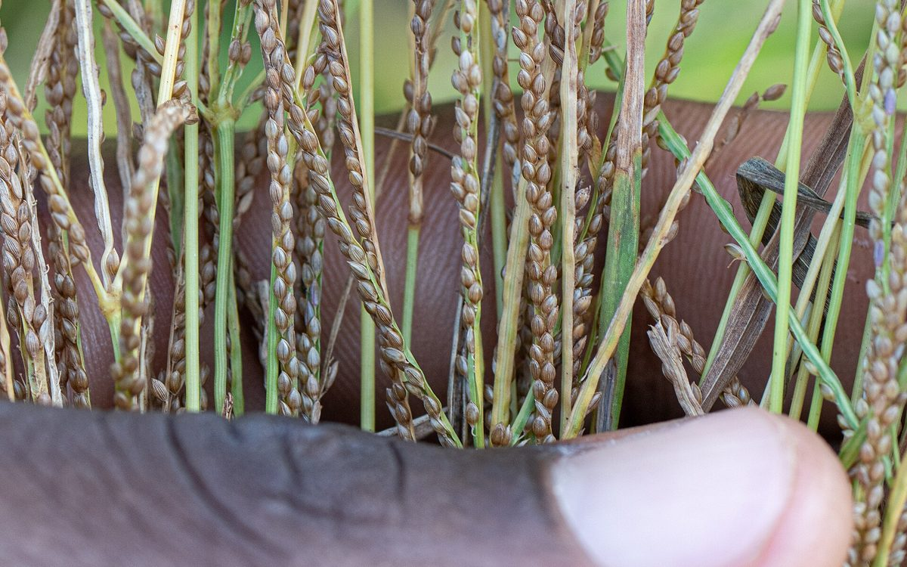
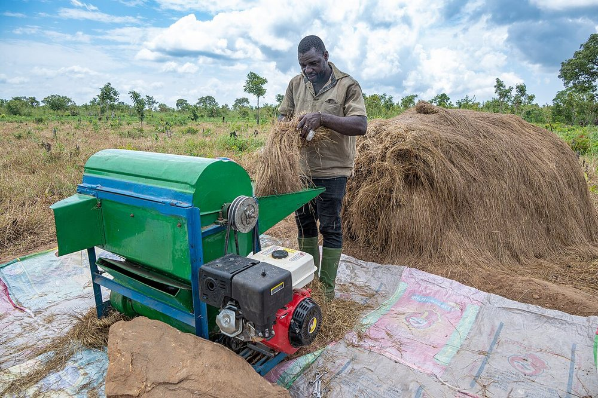

Culture vivrière
Fonio
La céréale la plus fine
- Cycle 60 à 90 jours
- Mise à jour 2026-10-21
- Niveau de confiance partiel

Présentation et utilisations
Céréale très précoce, adaptée aux sols pauvres et sableux. Elle sert de culture de sécurité quand la saison est courte, et sa finesse en fait un produit recherché en restauration et pour les farines.
Climat et sols
Chaleur et sols légers ; elle supporte une pluviométrie modérée et de faibles réserves. Éviter les sols lourds et engorgés. Convient aux parcelles marginales où les autres céréales déçoivent.
Variétés adaptées
Plusieurs écotypes locaux existent ; les noms précis ne sont pas documentés ici. La question à poser avant semis : précocité et résistance à la verse, car le fonio est une petite céréale qui se couche facilement.
Calendrier cultural
Semis dès l'installation des pluies, récolte 2 à 3 mois plus tard. La précocité permet de l'insérer avant ou après une autre culture ; le calendrier exact dépend de la zone.
Préparation du terrain
Travail superficiel suffisant. Semis très fin : préparer un lit de semence bien émietté, sans mottes, car la graine est minuscule.
Semis et plantation
Semis à la volée puis enfouissement léger, ou en lignes très serrées. La difficulté principale est la régularité : trop dense, la culture verse ; trop claire, elle est envahie par les adventices.
Entretien, fertilisation, irrigation
Désherbage précoce et manuel, avant que les adventices ne dominent. Éviter les passages tardifs qui couchent la culture. Pas d'apport azoté élevé : risque de verse.
Maladies, ravageurs et prévention
Surveiller les oiseaux à l'épiaison (protection par surveillance ou filets légers), les insectes des panicules et les maladies foliaires en saison humide. Aucun seuil de traitement documenté ici.
Récolte et post-récolte
Couper les panicules à maturité, avant égrenage naturel. Récolte souvent manuelle, au couteau ou à la faucille.
Conservation et transformation
Battage délicat, séchage complet, stockage hermétique. Le fonio absorbe l'humidité : un séchage insuffisant entraîne moisissures et pertes.
Coûts, rendements et débouchés
Débouchés : restauration, farines, marchés urbains et export de niche. Les prix ne sont pas vérifiés ici. Postes de dépense : semence, désherbage manuel (poste important), battage, séchage, conditionnement.
Tutoriel étape par étape
- 1. Préparer un lit fin
Émiettez bien la terre et enlevez les restes : la graine est toute petite, la moindre motte l'empêche de lever.
- 2. Semer régulièrement
Semez à la volée, par petites poignées, puis passez légèrement pour enterrer la graine.
- 3. Désherber tôt
Désherbez à la main dès que ça lève : sur le fonio, c'est le travail qui décide de la récolte.
- 4. Protéger l'épiaison
Surveillez les oiseaux et récoltez dès que c'est mûr, pour ne pas perdre les grains au champ.
- 5. Battre et sécher
Battez sur une aire propre, séchez jusqu'à ce que les grains ne collent plus, rangez en bidon fermé.

Crop Trust · CC BY-SA 4.0 · Wikimedia Commons
Sources, vérification et limites
- Base de connaissances interne · knowledge/agronomie.md (consulté le 2026-10-21)
Limites de cette fiche. Variétés, densités et rendements non documentés dans les sources internes. Aucun prix vérifié : à collecter avant toute projection économique.
Dernière mise à jour : 2026-10-21. Les prix, rendements et calendriers locaux ne sont mentionnés que lorsqu'ils sont documentés ; dans le doute, la fiche le dit.